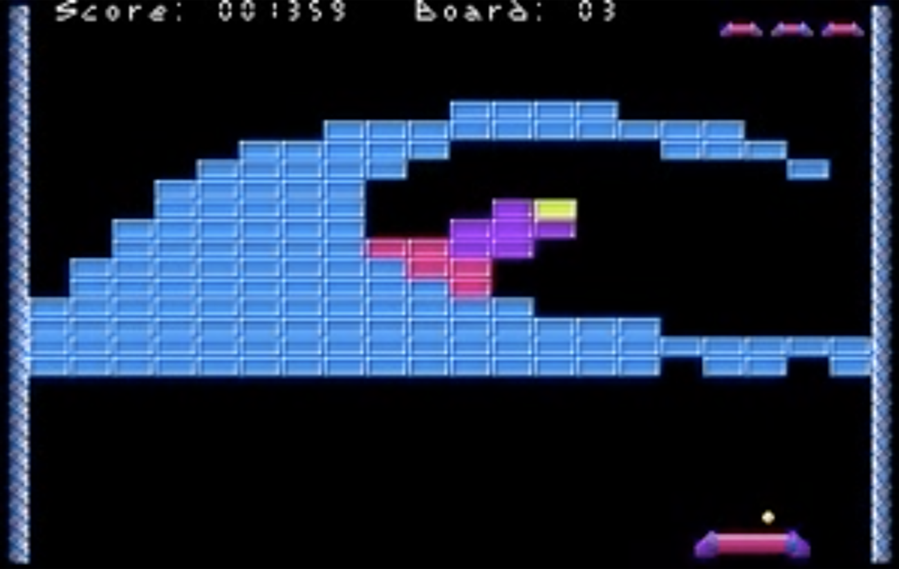
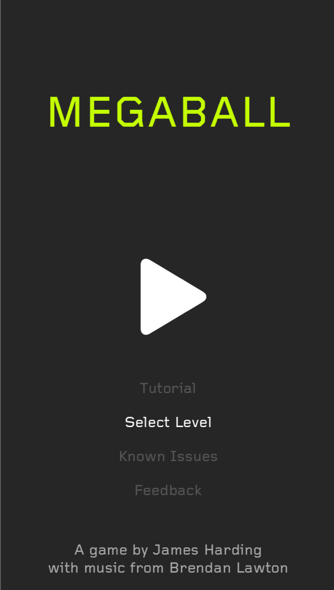
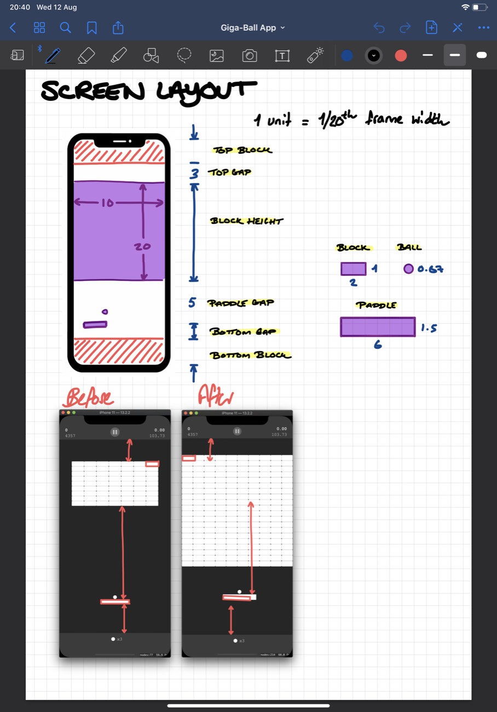
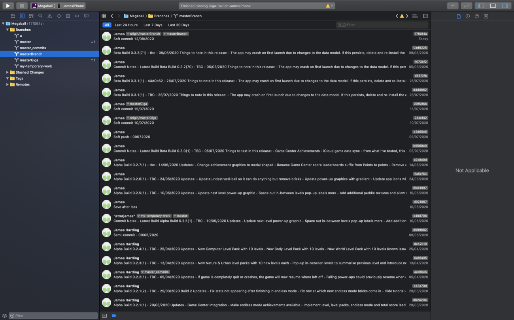

A game I could not find again
I am a Product Design Engineer by trade, and I had wanted for years to make something that was mine, something I was solely responsible for, which is a novelty you rarely get at work. The idea I kept coming back to was an app.
I also had a game stuck in my head. As a kid I played a brick breaker called Megaball to death. Years later I went looking for something like it on the App Store and came away disappointed: the good ones felt amateur, and the polished ones were full of adverts and in-app purchases. There was a gap where the game I wanted should have been.

Nine months of learning to code
I had tried and failed to learn iOS development several times, jumping straight into Stanford's course, getting out of my depth, giving up. This time I started at the actual beginning: Swift Playgrounds, an hour a day, taking notes as I went, then a ten-pound course on Udemy from top to bottom.
My first real project was a unit converter for engineers. It bored me to death. After a couple of months of building table views and re-reading my own notes about protocols and delegates, I stopped.
Then, staying on a friend's sofa in London, I said the brick-breaker idea out loud for the first time and realised how much more excited I was by it. I could not sleep. I ended up watching SpriteKit tutorials at three in the morning, and the thing that struck me was how achievable it looked.
I was excited again. Maybe this was within my reach.
A fortnight to a playable game
The first thing I built was the bounce: an algorithm that takes the angle the ball arrives at and where on the paddle it lands, and works out where it goes next. A few days of ups and downs and it worked, and I had learnt more about SpriteKit doing that than any tutorial had taught me.
Away on a business trip, I spent the evenings making bricks that disappear when the ball hits them. Three of the four brick types that are still in the game today were built that week. Before I flew home I had a level I could show people. It had been less than a fortnight.

Redundancy, and rather more time
I came back from a week in Tuscany, spent a few days at my desk, and was made redundant along with five hundred other people. Three months' pay, effective immediately.
It was a hard few months, but it did mean I could work on Giga-Ball properly. I expected the pace to rocket. It didn't. The next thing I built was power-ups, and power-ups took forever. Every one of them was a new corner of SpriteKit, and every one had to work sensibly alongside all the others. Catch a sticky paddle, then catch an expand paddle, and both graphics have to grow together.

Drawing it, twice, and then again
I designed everything in Sketch, the graphics first and then every level. I had tried building levels in code and caught myself designing them to be easy to type rather than good to play, which is exactly the wrong way round. So all 110 of them were drawn first and coded second.
By the end I had spent something like a quarter of the whole project doing graphic design, and I am glad I did. Looking back at the early screens, the game got much better every time I redrew it.

Australia, and then the world shut
In the middle of all this I took a job in Sydney. We accepted before the visa came through, sold almost everything we owned, and booked flights for the 21st of March.
You know what happened next. We got here. The game got finished in a country I had just arrived in, during a year when there was not a great deal else to do.
Released
Giga-Ball went on the App Store with 110 handmade levels, 28 power-ups, an endless mode, Game Center leaderboards and iCloud sync, and no adverts, no in-app purchases and no tracking, which was the entire point of building it in the first place.
It has been downloaded a few thousand times and rated 4.5 out of 5. Version 1.3, a second endless mode, a challenge that changes every day and a lot of new bricks, is on the way.